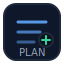

Step 1/6

Modularize your IaC
- Create reusable modules (network, storage, identity, monitoring).
- Define parameters per environment.
- Adopt naming and tagging standards.
Validation checklist
- Stakeholders have signed off the scope, SLAs, and data/security requirements.
- You have documented naming standards, environments, and ownership (RACI).